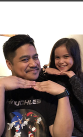
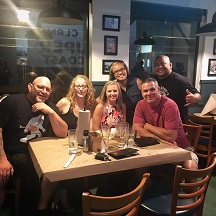

Chef Benny
The owner and creator of the Nanumo brand is our very own Chef Benny. Never see him without a smile while having the drive and heart of a lion. Cooks everything with passion to make the person he is feeding happy in and out.
Chef Phat
About the funniest person you will ever meet, he has never shy away from a challenge. He is the manager of all the stores so everyone calls him big brother. Chef Benny credits him for being the his mentor on begin his journey.

The Chef Crew
This group of talented young chefs is what makes Nanumo what it is today. Everyone here dedicates their purpose of cooking to serve anything that makes you feel good. "Big Family shout out to this crew!" -Chef Benny
.